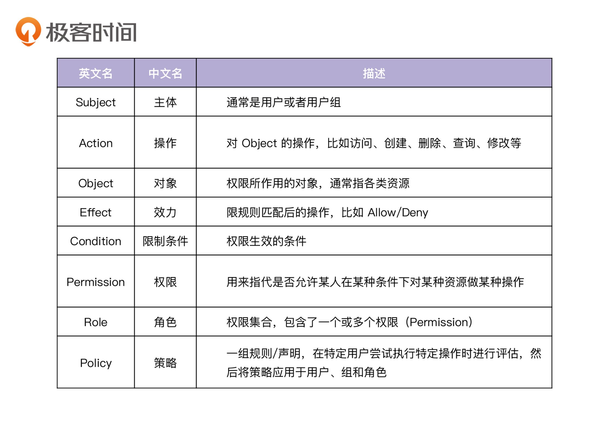
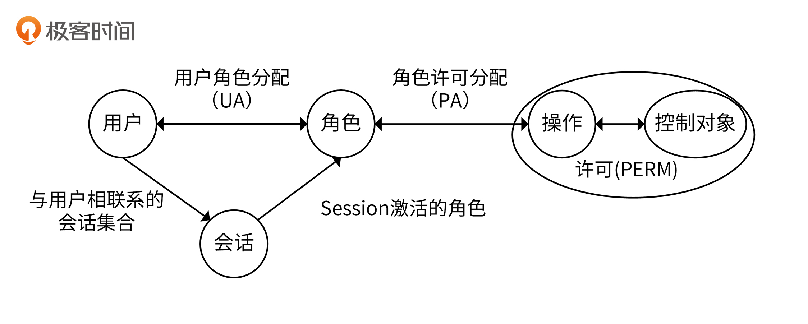
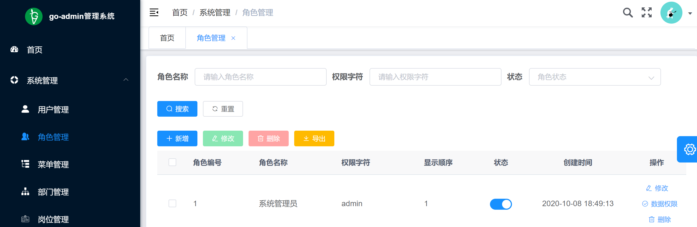
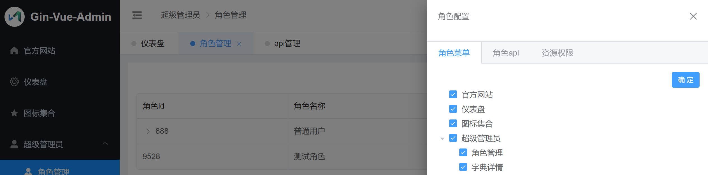

- 00 开篇词 从 0 开始搭建一个企业级 Go 应用.md
- 01 IAM系统概述：我们要实现什么样的 Go 项目？.md
- 02 环境准备：如何安装和配置一个基本的 Go 开发环境？.md
- 03 项目部署：如何快速部署 IAM 系统？.md
- 04 规范设计（上）：项目开发杂乱无章，如何规范？.md
- 05 规范设计（下）：commit 信息风格迥异、难以阅读，如何规范？.md
- 06 目录结构设计：如何组织一个可维护、可扩展的代码目录？.md
- 07 工作流设计：如何设计合理的多人开发模式？.md
- 08 研发流程设计（上）：如何设计 Go 项目的开发流程？.md
- 09 研发流程设计（下）：如何管理应用的生命周期？.md
- 10 设计方法：怎么写出优雅的 Go 项目？.md
- 11 设计模式：Go常用设计模式概述.md
- 12 API 风格（上）：如何设计RESTful API？.md
- 13 API 风格（下）：RPC API介绍.md
- 14 项目管理：如何编写高质量的Makefile？.md
- 15 研发流程实战：IAM项目是如何进行研发流程管理的？.md
- 16 代码检查：如何进行静态代码检查？.md
- 17 API 文档：如何生成 Swagger API 文档 ？.md
- 18 错误处理（上）：如何设计一套科学的错误码？.md
- 19 错误处理（下）：如何设计错误包？.md
- 20 日志处理（上）：如何设计日志包并记录日志？.md
- 21 日志处理（下）：手把手教你从 0 编写一个日志包.md
- 22 应用构建三剑客：Pflag、Viper、Cobra 核心功能介绍.md
- 23 应用构建实战：如何构建一个优秀的企业应用框架？.md
- 24 Web 服务：Web 服务核心功能有哪些，如何实现？.md
- 25 认证机制：应用程序如何进行访问认证？.md
- 26 IAM项目是如何设计和实现访问认证功能的？.md
- 27 权限模型：5大权限模型是如何进行资源授权的？.md
- 28 控制流（上）：通过iam-apiserver设计，看Web服务的构建.md
- 29 控制流（下）：iam-apiserver服务核心功能实现讲解.md
- 30 ORM：CURD 神器 GORM 包介绍及实战.md
- 31 数据流：通过iam-authz-server设计，看数据流服务的设计.md
- 32 数据处理：如何高效处理应用程序产生的数据？.md
- 33 SDK 设计（上）：如何设计出一个优秀的 Go SDK？.md
- 34 SDK 设计（下）：IAM项目Go SDK设计和实现.md
- 35 效率神器：如何设计和实现一个命令行客户端工具？.md
- 36 代码测试（上）：如何编写 Go 语言单元测试和性能测试用例？.md
- 37 代码测试（下）：Go 语言其他测试类型及 IAM 测试介绍.md
- 38 性能分析（上）：如何分析 Go 语言代码的性能？.md
- 39 性能分析（下）：API Server性能测试和调优实战.md
- 40 软件部署实战（上）：部署方案及负载均衡、高可用组件介绍.md
- 41 软件部署实战（中）：IAM 系统生产环境部署实战.md
- 42 软件部署实战（下）：IAM系统安全加固、水平扩缩容实战.md
- 43 技术演进（上）：虚拟化技术演进之路.md
- 44 技术演进（下）：软件架构和应用生命周期技术演进之路.md
- 45 基于Kubernetes的云原生架构设计.md
- 46 如何制作Docker镜像？.md
- 47 如何编写Kubernetes资源定义文件？.md
- 48 IAM 容器化部署实战.md
- 49 服务编排（上）：Helm服务编排基础知识.md
- 50 服务编排（下）：基于Helm的服务编排部署实战.md
- 51 基于 GitHub Actions 的 CI 实战.md
- 特别放送 Go Modules依赖包管理全讲.md
- 特别放送 Go Modules实战.md
- 特别放送 IAM排障指南.md
- 特别放送 分布式作业系统设计和实现.md
- 特别放送 给你一份Go项目中最常用的Makefile核心语法.md
- 特别放送 给你一份清晰、可直接套用的Go编码规范.md
- 直播加餐 如何从小白进阶成 Go 语言专家？.md
- 结束语 如何让自己的 Go 研发之路走得更远？.md
27 权限模型：5大权限模型是如何进行资源授权的？
你好，我是孔令飞。在开始讲解如何开发服务之前，我先来介绍一个比较重要的背景知识：权限模型。
在你的研发生涯中，应该会遇到这样一种恐怖的操作：张三因为误操作删除了李四的资源。你在刷新闻时，也可能会刷到这么一个爆款新闻：某某程序员删库跑路。操作之所以恐怖，新闻之所以爆款，是因为这些行为往往会带来很大的损失。
那么如何避免这些风险呢？答案就是对资源做好权限管控，这也是项目开发中绕不开的话题。腾讯云会强制要求所有的云产品都对接 访问管理（CAM） 服务（阿里云也有这种要求），之所以这么做，是因为保证资源的安全是一件非常非常重要的事情。
可以说，保证应用的资源安全，已经成为一个应用的必备能力。作为开发人员，你也一定要知道如何保障应用的资源安全。那么如何才能保障资源的安全呢？我认为你至少需要掌握下面这两点：
- 权限模型：你需要了解业界成熟的权限模型，以及这些模型的适用场景。只有具备足够宽广的知识面和视野，我们才能避免闭门造车，设计出优秀的资源授权方案。
- 编码实现：选择或设计出了优秀的资源授权方案后，你就要编写代码实现该方案。这门课的 IAM 应用，就是一个资源授权方案的落地项目。你可以通过对 IAM 应用的学习，来掌握如何实现一个资源授权系统。
无论是第一点还是第二点，都需要你掌握基本的权限模型知识。那么这一讲，我就来介绍下业界优秀的权限模型，以及这些模型的适用场景，以使你今后设计出更好的资源授权系统。
权限相关术语介绍
在介绍业界常见的权限模型前，我们先来看下在权限模型中出现的术语。我把常见的术语总结在了下面的表格里：

为了方便你理解，这一讲我分别用用户、操作和资源来替代 Subject、Action 和 Object。
权限模型介绍
接下来，我就详细介绍下一些常见的权限模型，让你今后在设计权限系统时，能够根据需求选择合适的权限模型。
不同的权限模型具有不同的特点，可以满足不同的需求。常见的权限模型有下面这 5 种：
- 权限控制列表（ACL，Access Control List）。
- 自主访问控制（DAC，Discretionary Access Control）。
- 强制访问控制（MAC，Mandatory Access Control）。
- 基于角色的访问控制（RBAC，Role-Based Access Control）。
- 基于属性的权限验证（ABAC，Attribute-Based Access Control）。
这里先简单介绍下这 5 种权限模型。ACL 是一种简单的权限模型；DAC 基于 ACL，将权限下放给具有此权限的主题；但 DAC 因为权限下放，导致它对权限的控制过于分散，为了弥补 DAC 的这个缺陷，诞生了 MAC 权限模型。
DAC 和 MAC 都是基于 ACL 的权限模型。ACL 及其衍生的权限模型可以算是旧时代的权限模型，灵活性和功能性都满足不了现代应用的权限需求，所以诞生了 RBAC。RBAC 也是迄今为止最为普及的权限模型。
但是，随着组织和应用规模的增长，所需的角色数量越来越多，变得难以管理，进而导致角色爆炸和职责分离（SoD）失败。最后，引入了一种新的、更动态的访问控制形式，称为基于属性的访问控制，也就是 ABAC。ABAC 被一些人看作是权限系统设计的未来。腾讯云的 CAM、AWS 的 IAM、阿里云的 RAM 都是 ABAC 类型的权限访问服务。
接下来，我会详细介绍这些权限模型的基本概念。
简单的权限模型：权限控制列表（ACL）
ACL（Access Control List，权限控制列表），用来判断用户是否可以对资源做特定的操作。例如，允许 Colin 创建文章的 ACL 策略为：
Subject: Colin
Action: Create
Object: Article
在 ACL 权限模型下，权限管理是围绕资源 Object 来设定的，ACL 权限模型也是比较简单的一种模型。
基于 ACL 下放权限的权限模型：自主访问控制（DAC）
DAC (Discretionary Access Control，自主访问控制)，是 ACL 的扩展模型，灵活性更强。使用这种模型，不仅可以判断 Subject 是否可以对 Object 做 Action 操作，同时也能让 Subject 将 Object、Action 的相同权限授权给其他的 Subject。例如，Colin 可以创建文章：
Subject: Colin
Action: Create
Object: Article
因为 Colin 具有创建文章的权限，所以 Colin 也可以授予 James 创建文章的权限：
Subject: James
Action: Create
Object: Article
经典的 ACL 模型权限集中在同一个 Subject 上，缺乏灵活性，为了加强灵活性，在 ACL 的基础上，DAC 模型将权限下放，允许拥有权限的 Subject 自主地将权限授予其他 Subject。
基于 ACL 且安全性更高的权限模型：强制访问控制（MAC）
MAC (Mandatory Access Control，强制访问控制)，是 ACL 的扩展模型，安全性更高。MAC 权限模型下，Subject 和 Object 同时具有安全属性。在做授权时，需要同时满足两点才能授权通过：
- Subject 可以对 Object 做 Action 操作。
- Object 可以被 Subject 做 Action 操作。
例如，我们设定了“Colin 和 James 可以创建文章”这个 MAC 策略：
Subject: Colin
Action: Create
Object: Article
Subject: James
Action: Create
Object: Article
我们还有另外一个 MAC 策略“文章可以被 Colin 创建”：
Subject: Article
Action: Create
Object: Colin
在上述策略中，Colin 可以创建文章，但是 James 不能创建文章，因为第二条要求没有满足。
这里你需要注意，在 ACL 及其扩展模型中，Subject 可以是用户，也可以是组或群组。
ACL、DAC 和 MAC 是旧时代的权限控制模型，无法满足现代应用对权限控制的需求，于是诞生了新时代的权限模型：RBAC 和 ABAC。
最普及的权限模型：基于角色的访问控制（RBAC）
RBAC (Role-Based Access Control，基于角色的访问控制)，引入了 Role（角色）的概念，并且将权限与角色进行关联。用户通过扮演某种角色，具有该角色的所有权限。具体如下图所示：

如图所示，每个用户关联一个或多个角色，每个角色关联一个或多个权限，每个权限又包含了一个或者多个操作，操作包含了对资源的操作集合。通过用户和权限解耦，可以实现非常灵活的权限管理。例如，可以满足以下两个权限场景：
第一，可以通过角色批量给一个用户授权。例如，公司新来了一位同事，需要授权虚拟机的生产、销毁、重启和登录权限。这时候，我们可以将这些权限抽象成一个运维角色。如果再有新同事来，就可以通过授权运维角色，直接批量授权这些权限，不用一个个地给用户授权这些权限。
第二，可以批量修改用户的权限。例如，我们有很多用户，同属于运维角色，这时候对运维角色的任何权限变更，就相当于对运维角色关联的所有用户的权限变更，不用一个个去修改这些用户的权限。
RBAC 又分为 RBAC0、RBAC1、RBAC2、RBAC3。RBAC0 是 RBAC 的核心思想，RBAC1 是基于 RBAC 的角色分层模型，RBAC2 增加了 RBAC 的约束模型。而 RBAC3，其实相当于 RBAC1 + RBAC2。
下面我来详细介绍下这四种 RBAC。
RBAC0：基础模型，只包含核心的四要素，也就是用户（User）、角色（Role）、权限（Permission：Objects-Operations）、会话（Session）。用户和角色可以是多对多的关系，权限和角色也是多对多的关系。
RBAC1：包括了 RBAC0，并且添加了角色继承。角色继承，即角色可以继承自其他角色，在拥有其他角色权限的同时，还可以关联额外的权限。
RBAC2：包括 RBAC0，并且添加了约束。具有以下核心特性：
- 互斥约束：包括互斥用户、互斥角色、互斥权限。同一个用户不能拥有相互排斥的角色，两个互斥角色不能分配一样的权限集，互斥的权限不能分配给同一个角色，在 Session 中，同一个角色不能拥有互斥权限。
- 基数约束：一个角色被分配的用户数量受限，它指的是有多少用户能拥有这个角色。例如，一个角色是专门为公司 CEO 创建的，那这个角色的数量就是有限的。
- 先决条件角色：指要想获得较高的权限，要首先拥有低一级的权限。例如，先有副总经理权限，才能有总经理权限。
- 静态职责分离(Static Separation of Duty)：用户无法同时被赋予有冲突的角色。
- 动态职责分离(Dynamic Separation of Duty)：用户会话中，无法同时激活有冲突的角色。
RBAC3：全功能的 RBAC，合并了 RBAC0、RBAC1、RBAC2。
此外，RBAC 也可以很方便地模拟出 DAC 和 MAC 的效果。
这里举个例子，来协助你理解 RBAC。例如，我们有 write article 和 manage article 的权限：
Permission:
- Name: write_article
- Effect: "allow"
- Action: ["Create", "Update", "Read"]
- Object: ["Article"]
- Name: manage_article
- Effect: "allow"
- Action: ["Delete", "Read"]
- Object: ["Article"]
同时，我们也有 Writer、Manager和 CEO 3个角色，Writer 具有 write_article 权限，Manager 具有 manage_article 权限，CEO 具有所有权限：
Role:
- Name: Writer
Permissions:
- write_article
- Name: Manager
Permissions:
- manage_article
- Name: CEO
Permissions:
- write_article
- manage_article
接下来，我们对 Colin 用户授予 Writer 角色：
Subject: Colin
Roles:
- Writer
那么现在 Colin 就具有 Writer 角色的所有权限 write_article，write_article 权限可以创建文章。
接下来，再对 James 用户授予 Writer 和 Manager 角色：
Subject: James
Roles:
- Writer
- Manager
那么现在 James 就具有 Writer 角色和 Manager 角色的所有权限：write_article、manage_article，这些权限允许 James 创建和删除文章。
最强大的权限模型：基于属性的权限验证（ABAC）
ABAC (Attribute-Based Access Control，基于属性的权限验证），规定了哪些属性的用户可以对哪些属性的资源在哪些限制条件下进行哪些操作。跟 RBAC 相比，ABAC 对权限的控制粒度更细，主要规定了下面这四类属性：
- 用户属性，例如性别、年龄、工作等。
- 资源属性，例如创建时间、所属位置等。
- 操作属性，例如创建、修改等。
- 环境属性，例如来源 IP、当前时间等。
下面是一个 ABAC 策略：
Subject:
Name: Colin
Department: Product
Role: Writer
Action:
- create
- update
Resource:
Type: Article
Tag:
- technology
- software
Mode:
- draft
Contextual:
IP: 10.0.0.10
上面权限策略描述的意思是，产品部门的 Colin 作为一个 Writer 角色，可以通过来源 IP 是 10.0.0.10 的客户端，创建和更新带有 technology 和 software 标签的草稿文章。
这里提示一点：ABAC 有时也被称为 PBAC（Policy-Based Access Control）或 CBAC（Claims-Based Access Control）。
这里，我通过现实中的 ABAC 授权策略，帮你理解 ABAC 权限模型。下面是一个腾讯云的 CAM 策略，也是一种 ABAC 授权模式：
{
"version": "2.0",
"statement": [
{
"effect": "allow",
"action": [
"cos:List*",
"cos:Get*",
"cos:Head*",
"cos:OptionsObject"
],
"resource": "qcs::cos:ap-shanghai:uid/1250000000:Bucket1-1250000000/dir1/*",
"condition": {
"ip_equal": {
"qcs:ip": [
"10.217.182.3/24",
"111.21.33.72/24"
]
}
}
}
]
}
上面的授权策略表示：用户必须在 10.217.182.3⁄24 或者 111.21.33.72⁄24 网段才能调用云 API（cos:List*、cos:Get*、cos:Head*、cos:OptionsObject），对 1250000000 用户下的 dir1 目录下的文件进行读取操作。
这里，ABAC 规定的四类属性分别是：
- 用户属性：用户为 1250000000。
- 资源属性：dir1 目录下的文件。
- 操作属性：读取（cos:List*、cos:Get*、cos:Head*、cos:OptionsObject 都是读取 API）。
- 环境属性：10.217.182.3⁄24 或者 111.21.33.72⁄24 网段。
相关开源项目
上面我介绍了权限模型的相关知识，但是现在如果让你真正去实现一个权限系统，你可能还是不知从何入手。
在这里，我列出了一些 GitHub 上比较优秀的开源项目，你可以学习这些项目是如何落地一个权限模型的，也可以基于这些项目进行二次开发，开发一个满足业务需求的权限系统。
Casbin
Casbin 是一个用 Go 语言编写的访问控制框架，功能强大，支持 ACL、RBAC、ABAC 等访问模型，很多优秀的权限管理系统都是基于 Casbin 来构建的。Casbin 的核心功能都是围绕着访问控制来构建的，不负责身份认证。如果以后老板让你实现一个权限管理系统，Casbin 是一定要好好研究的开源项目。
keto
keto 是一个云原生权限控制服务，通过提供 REST API 进行授权，支持 RBAC、ABAC、ACL、AWS IAM 策略、Kubernetes Roles 等权限模型，可以解决下面这些问题：
- 是否允许某些用户修改此博客文章？
- 是否允许某个服务打印该文档？
- 是否允许 ACME 组织的成员修改其租户中的数据？
- 是否允许在星期一的下午 4 点到下午 5 点，从 IP 10.0.0.2 发出的请求执行某个 Job？
go-admin
go-admin 是一个基于 Gin + Vue + Element UI 的前后端分离权限管理系统脚手架，它的访问控制模型采用了 Casbin 的 RBAC 访问控制模型，功能强大，包含了如下功能：
- 基础用户管理功能；
- JWT 鉴权；
- 代码生成器；
- RBAC 权限控制；
- 表单构建；
- ……
该项目还支持 RESTful API 设计规范、Swagger 文档、GORM 库等。go-admin 不仅是一个优秀的权限管理系统，也是一个优秀的、功能齐全的 Go 开源项目。你在做项目开发时，也可以参考该项目的构建思路。go-admin 管理系统自带前端，如下图所示。

LyricTian/gin-admin
gin-admin 类似于 go-admin，是一个基于 Gin+Gorm+Casbin+Wire 实现的权限管理脚手架，并自带前端，在做权限管理系统调研时，也非常值得参考。
gin-admin 大量采用了 Go 后端开发常用的技术，比如 Gin、GORM、JWT 认证、RESTful API、Logrus 日志包、Swagger 文档等。因此，你在做 Go 后端服务开发时，也可以学习该项目的构建方法。
gin-vue-admin
gin-vue-admin 是一个基于 Gin 和 Vue 开发的全栈前后端分离的后台管理系统，集成了 JWT 鉴权、动态路由、动态菜单、Casbin 鉴权、表单生成器、代码生成器等功能。gin-vue-admin 集成了 RBAC 权限管理模型，界面如下图所示：

选择建议
介绍了那么多优秀的开源项目，最后我想给你一些选择建议。如果你想研究 ACL、RBAC、ABAC 等权限模型如何落地，我强烈建议你学习 Casbin 项目，Casbin 目前有近万的 GitHub star 数，处于活跃的开发状态。有很多项目在使用 Casbin，例如 go-admin、 gin-admin 、 gin-vue-admin 等。
keto 类似于 Casbin，主要通过 Go 包的方式，对外提供授权能力。keto 也是一个非常优秀的权限类项目，当你研究完 Casbin 后，如果还想再研究下其他授权类项目，建议你读下 keto 的源码。
go-admin、gin-vue-admin、gin-admin 这 3 个都是基于 Casbin 的 Go 项目。其中，gin-vue-admin 是后台管理系统框架，里面包含了 RBAC 权限管理模块；go-admin 和 gin-admin 都是 RBAC 权限管理脚手架。所以，如果你想找一个比较完整的 RBAC 授权系统（自带前后端），建议你优先研究下 go-admin，如果还有精力，可以再研究下 gin-admin、gin-vue-admin。
总结
这一讲，我介绍了 5 种常见的权限模型。其中，ACL 最简单，ABAC 最复杂，但是功能最强大，也最灵活。RBAC 则介于二者之间。对于一些云计算厂商来说，因为它们面临的授权场景复杂多样，需要一个非常强大的授权模型，所以腾讯云、阿里云和 AWS 等云厂商普遍采用了 ABAC 模型。
如果你的资源授权需求不复杂，可以考虑 RBAC；如果你需要一个能满足复杂场景的资源授权系统，建议选择 ABAC，ABAC 的设计思路可以参考下腾讯云的 CAM、阿里云的 RAM 和 AWS 的 IAM。
另外，如果你想深入了解权限模型如何具体落地，建议你阅读 Casbin 源码。
课后练习
- 思考一下，如果公司需要你实现一个授权中台系统，应该选用哪种权限模型来构建，来满足不同业务的不同需求？
- 思考一下，如何将授权流程集成进统一接入层，例如 API 网关？
欢迎你在留言区与我交流讨论，我们下一讲见。
© 2019 - 2023 Liangliang Lee. Powered by gin and hexo-theme-book.